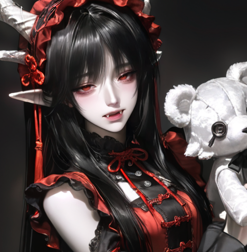
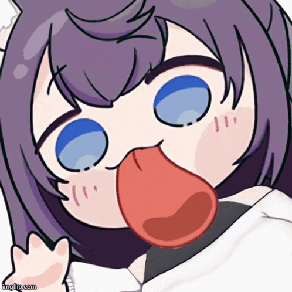
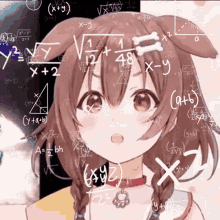
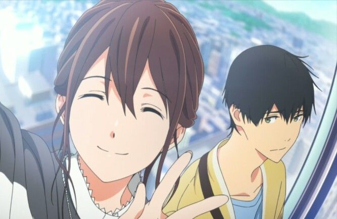

ชื่อ-นามสกุล: เด็กหญิงส้มตำ อร่อยมาก
ชื่อเล่น: หมึกแห้ง
สาขาวิชา: Full Stack Web Development
Section: 1

เพราะมีความสนใจด้านการพัฒนาเว็บไซต์และอยากเรียนรู้การสร้างเว็บไซต์ ตั้งแต่ส่วนหน้าบ้านไปจนถึงส่วนหลังบ้าน เพื่อสามารถพัฒนาเว็บไซต์ได้ด้วยตนเอง

คาดหวังว่าจะได้รับประสบการณ์ในการพัฒนาเว็บไซต์มากขึ้น ได้ฝึกปฏิบัติจริง และสามารถนำความรู้ไปสร้างผลงานของตนเองได้ เมื่อทำสำเร็จจะรู้สึกภูมิใจ และประทับใจในสิ่งที่ตนเองสร้างขึ้น

จุดอ่อนของตนเองคือยังจำคำสั่งและโค้ดต่างๆ ได้ไม่ครบ บางครั้งอาจจำไม่ได้ว่าการใส่รูปภาพหรือองค์ประกอบต่างๆ ต้องใช้โค้ดใด จึงต้องฝึกเขียนโค้ดอย่างสม่ำเสมอ ทบทวนบทเรียน และทดลองสร้างเว็บไซต์ด้วยตนเองบ่อยๆ
เป็นเว็บไซต์ กาชาสุ่ม มินิมอลน่ารักๆค่ะ
Gacha Message
เรื่องนี้มีความน่ารักใสๆมากที่สุดในสามโลกเลยทีเดียว Kimi no Suizou wo Tabetai อาจารย์ลองไปดูได้นะคะ ถ้ายังไม่เคยดู หนูแนะนำเลย
